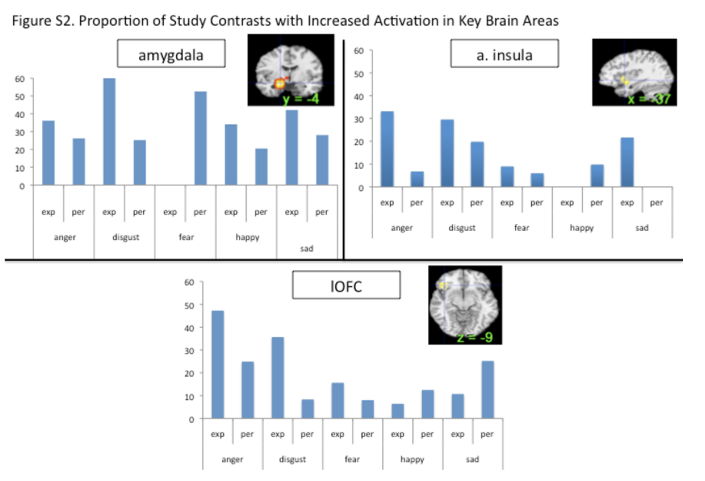
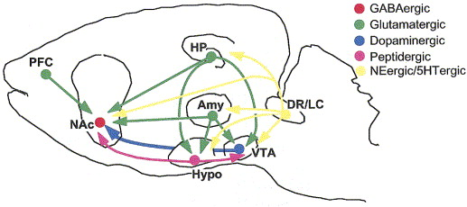

Fear, stress, pleasure, & reward
The biological bases of emotion
Are there physiological signatures of emotions?
Autonomic Nervous System (ANS)
This meta-analytic investigation demonstrates that there is no 1-to-1 mapping between an emotion category and a specific autonomic nervous system response pattern. In addition, we observed substantial variability in autonomic nervous system changes during instances of the same emotion category that was not accounted for by experimental moderators (such as the way the emotion was induced). These findings suggest that autonomic nervous system changes during emotion are less like a bodily fingerprint and more like a population of variable, context sensitive instances. (Siegel et al., 2018)
Body ‘location’ of experienced emotions


Where in the brain is emotion processed?
Lindquist, Wager, Kober, Bliss-Moreau, & Barrett (2012)
Locationist account
- Where in the brain is emotion processed?

Constructionist account
A psychological constructionist account of emotion assumes that emotions are psychological events that emerge out of more basic psychological operations that are not specific to emotion. In this view, mental categories such as anger, sadness, fear, et cetera, are not respected by the brain (nor are emotion, perception, or cognition, for that matter.
…emotions emerge when people make meaning out of sensory input from the body and from the world using knowledge of prior experiences. Emotions are “situated conceptualizations” (cf. Barsalou 2003) because the emerging meaning is tailored to the immediate environment and prepares the person to respond to sensory input in a way that is tailored to the situation




Amygdala as a ‘hub’ for fear
Our meta-analytic findings were inconsistent with a locationist hypothesis of amygdala function but were more consistent with the psychological constructionist hypothesis. Our density analyses revealed that, as compared to other brain regions, voxels within both amygdalae had more consistent increases in activation during instances of fear perception than during the perception of any other emotion category (Table 1). These voxels were not functionally specific for instances of perceiving fear, however. (Lindquist et al., 2012)
Anterior insula as ‘hub’ for disgust
Our meta-analytic findings were inconsistent with the locationist account that the anterior insula is the brain seat of disgust but were more consistent with the psychological constructionist account that insula activity is correlated with interoception and the awareness of affective feelings. (Lindquist et al., 2012)
Orbitofrontal cortex (OFC) as ‘hub’ for anger
Our meta-analytic findings were inconsistent with the locationist hypothesis that the OFC is the brain seat of anger. As compared to voxels within other brain regions, voxels within the OFC did not have more consistent increases during instances of anger experience or perception than during any other emotion category. Rather, as compared to voxels within other brain regions, voxels within the left lOFC had more consistent increases in activation during instances of disgust experience than during the experience of other emotion categories. (Lindquist et al., 2012)
Anterior cingulate cortex as ‘hub’ for sadness
Our meta-analytic evidence is inconsistent with the locationist account that the ACC is the brain basis of sadness, but more consistent with a psychological constructionist hypothesis of ACC function. As compared to voxels within other brain regions, voxels within the sACC, pACC and aMCC did not have more consistent increases when participants were experiencing or perceiving instances of sadness than during any other emotion category (Fig. 6). (Lindquist et al., 2012)
The biology of fear
Animal models


Amygdala circuits

- Direct (fast) pathways via thalamus
- Indirect (slower) pathways via cortex
- Input and output (behavior, physiology) specificity
Specificity of learning stimulus/response mappings

- Specific stimulus/response, \(S \rightarrow R\), patterns
- Visual OR Auditory \(\rightarrow\) pain
- Taste \(\rightarrow\) nausea
Circuitry


- BLA, basolateral complex of the amygdala
- CEA, central nucleus of the amygdala
- ITC, intercalated cells of the amygdala
- PL, prelimbic cortex
- IL, infralimbic cortex
- HPC, hippocampus
- Thal, thalamus
- PAG, periaqueductal gray
- PBN, parabrachial nucleus
Stress
Types
- Acute stress
- Short duration
- Brain detects threat
- Mobilizes physiological, behavioral responses
- HPA (Cortisol), SAM (NE/Epi) axes
- vs. Chronic or stress
- Long duration, persistent
Glucocorticoids
- Hypothalamus: CRH \(\rightarrow\) anterior pituitary
- Anterior pituitary: ACTH \(\rightarrow\) bloodstream
- Adrenal cortex: Corticosteroids \(\rightarrow\) bloodstream
- Cortisol (hydrocortisone/CORT)
- Increases blood glucose levels
- Suppresses immune system
- Reduces inflammation
- Aids in metabolism
- Cortisol receptors in body and brain

- Multiple feedback loops

Impacts of acute stress


Changes in neural architecture
- Hippocampus (rich in CORT receptors)
- Prefrontal cortex
Neurochemical factors
- Cortisol enhances glutamate release
- Corticosteroid antagonists block this
- Ketamine (NMDA receptor antagonist) may act via similar mechanisms

Pleasure/reward
Evolutionary/comparative perspective

Reward
- A reward reinforces (makes more prevalent/probable) some behavior
- Milner and Olds (Milner, 1989) discovered ‘rewarding’ power of electrical self-stimulation
- (Heath, 1963) studied effects in human patients.
“Reward” circuitry in the brain

- Lateral Hypothalamus (Hyp)
- Medial forebrain bundle (MFB)
- Ventral tegmental area (VTA) in midbrain
- Nucleus accumbens (nAcc)
- Dorsal Raphe Nucleus/Locus Coeruleus (DR/LC)
- Amygdala (Amy)
- Hippocampus (HP)
- Prefrontal cortex (PFC)

What does DA signal?
- Hedonia and anhedonia
- Incentive salience
- Reward prediction error (RPE)

DA and GABA signaling

Expectation modulates DA signaling

DA network

Reward & Aversion Networks

Psychopharmacology
- Dopamine (DA)
- Serotonin (5-HT), Norepinephrine (NE/NA)
- Acetylcholine (ACh)
Motor neurons release ACh onto muscle fibers in the PNS. Here, their role is as neuromodulator in the CNS.

- Opioids, endogenous morphine-like NTs (endorphins)

- Cannabinoids = psychoactive compounds found in cannibis
- Endocannabinoids (endogenous cannabinoid system)
- Cannabinoid CB1 receptors in CNS; CB2 in body, immune system